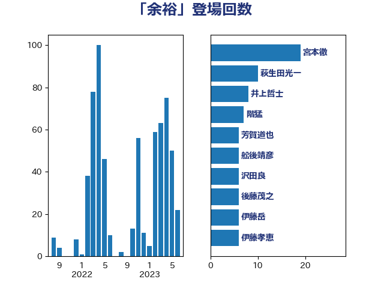

単語「余裕」

| 宮本徹 | 日本共産党 | 19 回 |
| 萩生田光一 | 自由民主党 | 10 回 |
| 井上哲士 | 日本共産党 | 8 回 |
| 階猛 | 立憲民主党 | 7 回 |
| 芳賀道也 | 国民民主党 | 6 回 |
| 舩後靖彦 | れいわ新選組 | 6 回 |
| 沢田良 | 日本維新の会 | 6 回 |
| 後藤茂之 | 自由民主党 | 6 回 |
| 伊藤岳 | 日本共産党 | 6 回 |
| 伊藤孝恵 | 国民民主党 | 6 回 |
| 長友慎治 | 国民民主党 | 5 回 |
| 西村康稔 | 自由民主党 | 5 回 |
| 笠井亮 | 日本共産党 | 5 回 |
| 永岡桂子 | 自由民主党 | 5 回 |
| 庄子賢一 | 公明党 | 5 回 |
| 寺田静 | 無所属 | 5 回 |
| 大西健介 | 立憲民主党 | 5 回 |
| 堀場幸子 | 日本維新の会 | 5 回 |
| 加藤勝信 | 自由民主党 | 5 回 |
| 倉林明子 | 日本共産党 | 5 回 |
| 伊波洋一 | 無所属 | 5 回 |
| 井坂信彦 | 立憲民主党 | 5 回 |
| 鬼木誠 | 立憲民主党 | 4 回 |
| 鈴木義弘 | 国民民主党 | 4 回 |
| 鈴木俊一 | 自由民主党 | 4 回 |
| 野村哲郎 | 自由民主党 | 4 回 |
| 赤木正幸 | 日本維新の会 | 4 回 |
| 藤巻健太 | 日本維新の会 | 4 回 |
| 田村憲久 | 自由民主党 | 4 回 |
| 河西宏一 | 公明党 | 4 回 |
| 末松義規 | 立憲民主党 | 4 回 |
| 斎藤アレックス | 国民民主党 | 4 回 |
| 平山佐知子 | 無所属 | 4 回 |
| 小池晃 | 日本共産党 | 4 回 |
| 宮本岳志 | 日本共産党 | 4 回 |
| 北側一雄 | 公明党 | 4 回 |
| 佐々木さやか | 公明党 | 4 回 |
| 高橋光男 | 公明党 | 3 回 |
| 馬場伸幸 | 日本維新の会 | 3 回 |
| 野間健 | 立憲民主党 | 3 回 |
| 野田聖子 | 自由民主党 | 3 回 |
| 落合貴之 | 立憲民主党 | 3 回 |
| 石井苗子 | 日本維新の会 | 3 回 |
| 田中健 | 国民民主党 | 3 回 |
| 浮島智子 | 公明党 | 3 回 |
| 池田佳隆 | 自由民主党 | 3 回 |
| 林芳正 | 自由民主党 | 3 回 |
| 川田龍平 | 立憲民主党 | 3 回 |
| 岸田文雄 | 自由民主党 | 3 回 |
| 岡本あき子 | 立憲民主党 | 3 回 |
| 山田勝彦 | 立憲民主党 | 3 回 |
| 山井和則 | 立憲民主党 | 3 回 |
| 小山展弘 | 立憲民主党 | 3 回 |
| 太栄志 | 立憲民主党 | 3 回 |
| 塩村あやか | 立憲民主党 | 3 回 |
| 堤かなめ | 立憲民主党 | 3 回 |
| 吉田とも代 | 日本維新の会 | 3 回 |
| 伴野豊 | 立憲民主党 | 3 回 |
| 高木宏壽 | 自由民主党 | 2 回 |
| 高木かおり | 日本維新の会 | 2 回 |
| 高市早苗 | 自由民主党 | 2 回 |
| 青島健太 | 日本維新の会 | 2 回 |
| 青山大人 | 立憲民主党 | 2 回 |
| 鈴木敦 | 国民民主党 | 2 回 |
| 金子恭之 | 自由民主党 | 2 回 |
| 近藤和也 | 立憲民主党 | 2 回 |
| 赤羽一嘉 | 公明党 | 2 回 |
| 谷田川元 | 立憲民主党 | 2 回 |
| 西田実仁 | 公明党 | 2 回 |
| 緑川貴士 | 立憲民主党 | 2 回 |
| 米山隆一 | 立憲民主党 | 2 回 |
| 空本誠喜 | 日本維新の会 | 2 回 |
| 牧山ひろえ | 立憲民主党 | 2 回 |
| 熊谷裕人 | 立憲民主党 | 2 回 |
| 清水貴之 | 日本維新の会 | 2 回 |
| 浜田靖一 | 自由民主党 | 2 回 |
| 浅野哲 | 国民民主党 | 2 回 |
| 櫻井周 | 立憲民主党 | 2 回 |
| 櫛渕万里 | れいわ新選組 | 2 回 |
| 梅村みずほ | 日本維新の会 | 2 回 |
| 柴愼一 | 立憲民主党 | 2 回 |
| 枝野幸男 | 立憲民主党 | 2 回 |
| 村田享子 | 立憲民主党 | 2 回 |
| 末松信介 | 自由民主党 | 2 回 |
| 斉藤鉄夫 | 公明党 | 2 回 |
| 掘井健智 | 日本維新の会 | 2 回 |
| 川合孝典 | 国民民主党 | 2 回 |
| 岸真紀子 | 立憲民主党 | 2 回 |
| 岩本剛人 | 自由民主党 | 2 回 |
| 岡田直樹 | 自由民主党 | 2 回 |
| 山際大志郎 | 自由民主党 | 2 回 |
| 山添拓 | 日本共産党 | 2 回 |
| 山本佐知子 | 自由民主党 | 2 回 |
| 山崎誠 | 立憲民主党 | 2 回 |
| 山崎正恭 | 公明党 | 2 回 |
| 小野泰輔 | 日本維新の会 | 2 回 |
| 小林鷹之 | 自由民主党 | 2 回 |
| 小川淳也 | 立憲民主党 | 2 回 |
| 小倉將信 | 自由民主党 | 2 回 |
| 宮口治子 | 立憲民主党 | 2 回 |
| 大島敦 | 立憲民主党 | 2 回 |
| 吉良州司 | 無所属 | 2 回 |
| 吉良よし子 | 日本共産党 | 2 回 |
| 吉川元 | 立憲民主党 | 2 回 |
| 住吉寛紀 | 日本維新の会 | 2 回 |
| 伊佐進一 | 公明党 | 2 回 |
| 三浦信祐 | 公明党 | 2 回 |
| 三木圭恵 | 日本維新の会 | 2 回 |
| 三上えり | 立憲民主党 | 2 回 |
| 高見康裕 | 自由民主党 | 1 回 |
| 高良鉄美 | 無所属 | 1 回 |
| 高橋千鶴子 | 日本共産党 | 1 回 |
| 高橋克法 | 自由民主党 | 1 回 |
| 高木真理 | 立憲民主党 | 1 回 |
| 馬場雄基 | 立憲民主党 | 1 回 |
| 青柳仁士 | 日本維新の会 | 1 回 |
| 青山繁晴 | 自由民主党 | 1 回 |
| 阿部知子 | 立憲民主党 | 1 回 |
| 長浜博行 | 無所属 | 1 回 |
| 長妻昭 | 立憲民主党 | 1 回 |
| 鈴木英敬 | 自由民主党 | 1 回 |
| 金村龍那 | 日本維新の会 | 1 回 |
| 野田佳彦 | 立憲民主党 | 1 回 |
| 野中厚 | 自由民主党 | 1 回 |
| 里見隆治 | 公明党 | 1 回 |
| 遠藤良太 | 日本維新の会 | 1 回 |
| 道下大樹 | 立憲民主党 | 1 回 |
| 足立康史 | 日本維新の会 | 1 回 |
| 谷公一 | 自由民主党 | 1 回 |
| 西村智奈美 | 立憲民主党 | 1 回 |
| 葉梨康弘 | 自由民主党 | 1 回 |
| 菊田真紀子 | 立憲民主党 | 1 回 |
| 若松謙維 | 公明党 | 1 回 |
| 紙智子 | 日本共産党 | 1 回 |
| 笠浩史 | 無所属 | 1 回 |
| 秋葉賢也 | 自由民主党 | 1 回 |
| 福山哲郎 | 立憲民主党 | 1 回 |
| 神谷裕 | 立憲民主党 | 1 回 |
| 神谷政幸 | 自由民主党 | 1 回 |
| 礒崎哲史 | 国民民主党 | 1 回 |
| 石橋通宏 | 立憲民主党 | 1 回 |
| 石垣のりこ | 立憲民主党 | 1 回 |
| 矢倉克夫 | 公明党 | 1 回 |
| 白石洋一 | 立憲民主党 | 1 回 |
| 田島麻衣子 | 立憲民主党 | 1 回 |
| 玉木雄一郎 | 国民民主党 | 1 回 |
| 牧原秀樹 | 自由民主党 | 1 回 |
| 渡辺周 | 立憲民主党 | 1 回 |
| 浜田聡 | NHK党 | 1 回 |
| 浜地雅一 | 公明党 | 1 回 |
| 浅田均 | 日本維新の会 | 1 回 |
| 津島淳 | 自由民主党 | 1 回 |
| 河野太郎 | 自由民主党 | 1 回 |
| 池畑浩太朗 | 日本維新の会 | 1 回 |
| 池下卓 | 日本維新の会 | 1 回 |
| 横沢高徳 | 立憲民主党 | 1 回 |
| 榛葉賀津也 | 国民民主党 | 1 回 |
| 梅村聡 | 日本維新の会 | 1 回 |
| 柴田巧 | 日本維新の会 | 1 回 |
| 柚木道義 | 立憲民主党 | 1 回 |
| 松野博一 | 自由民主党 | 1 回 |
| 松本剛明 | 自由民主党 | 1 回 |
| 松川るい | 自由民主党 | 1 回 |
| 東徹 | 日本維新の会 | 1 回 |
| 本村伸子 | 日本共産党 | 1 回 |
| 木村英子 | れいわ新選組 | 1 回 |
| 有村治子 | 自由民主党 | 1 回 |
| 星北斗 | 自由民主党 | 1 回 |
| 日下正喜 | 公明党 | 1 回 |
| 新妻秀規 | 公明党 | 1 回 |
| 斎藤嘉隆 | 立憲民主党 | 1 回 |
| 打越さく良 | 立憲民主党 | 1 回 |
| 志位和夫 | 日本共産党 | 1 回 |
| 広瀬めぐみ | 自由民主党 | 1 回 |
| 平将明 | 自由民主党 | 1 回 |
| 市村浩一郎 | 日本維新の会 | 1 回 |
| 岬麻紀 | 日本維新の会 | 1 回 |
| 岩谷良平 | 日本維新の会 | 1 回 |
| 岩渕友 | 日本共産党 | 1 回 |
| 山本太郎 | れいわ新選組 | 1 回 |
| 山本剛正 | 日本維新の会 | 1 回 |
| 尾崎正直 | 自由民主党 | 1 回 |
| 小野寺五典 | 自由民主党 | 1 回 |
| 小西洋之 | 立憲民主党 | 1 回 |
| 小熊慎司 | 立憲民主党 | 1 回 |
| 小林茂樹 | 自由民主党 | 1 回 |
| 寺田学 | 立憲民主党 | 1 回 |
| 室井邦彦 | 日本維新の会 | 1 回 |
| 安江伸夫 | 公明党 | 1 回 |
| 奥野総一郎 | 立憲民主党 | 1 回 |
| 大野泰正 | 自由民主党 | 1 回 |
| 大石あきこ | れいわ新選組 | 1 回 |
| 大島九州男 | れいわ新選組 | 1 回 |
| 大塚耕平 | 国民民主党 | 1 回 |
| 塩崎彰久 | 自由民主党 | 1 回 |
| 城井崇 | 立憲民主党 | 1 回 |
| 坂本祐之輔 | 立憲民主党 | 1 回 |
| 和田政宗 | 自由民主党 | 1 回 |
| 吉田統彦 | 立憲民主党 | 1 回 |
| 吉田久美子 | 公明党 | 1 回 |
| 吉川沙織 | 立憲民主党 | 1 回 |
| 古賀千景 | 立憲民主党 | 1 回 |
| 古賀之士 | 立憲民主党 | 1 回 |
| 古川直季 | 自由民主党 | 1 回 |
| 友納理緒 | 自由民主党 | 1 回 |
| 北神圭朗 | 無所属 | 1 回 |
| 北村経夫 | 自由民主党 | 1 回 |
| 勝部賢志 | 立憲民主党 | 1 回 |
| 勝目康 | 自由民主党 | 1 回 |
| 前川清成 | 日本維新の会 | 1 回 |
| 佐藤英道 | 公明党 | 1 回 |
| 佐藤正久 | 自由民主党 | 1 回 |
| 五十嵐清 | 自由民主党 | 1 回 |
| 中野英幸 | 自由民主党 | 1 回 |
| 中野洋昌 | 公明党 | 1 回 |
| 上田勇 | 公明党 | 1 回 |
| 一谷勇一郎 | 日本維新の会 | 1 回 |